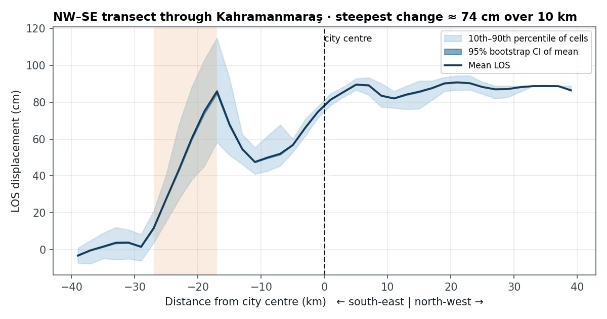
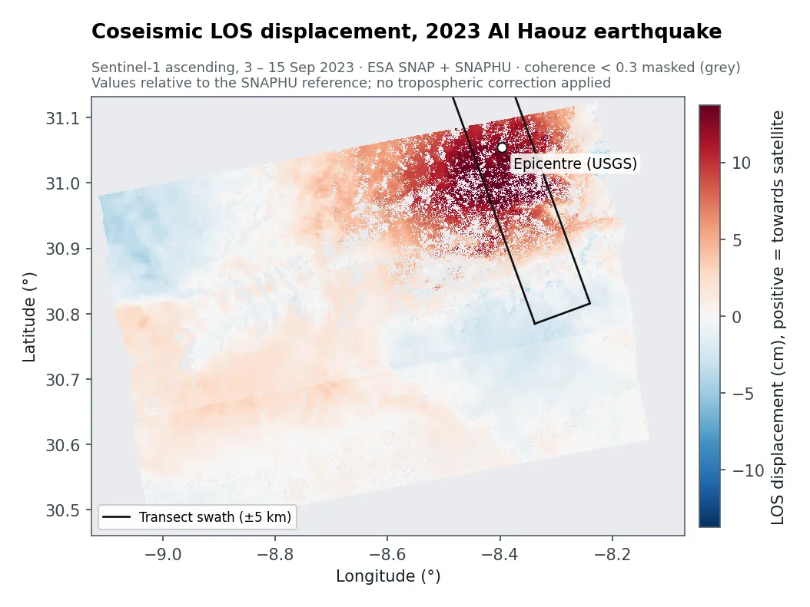

问题
大地震之后，工程师和规划人员需要知道地面在哪里移动了、移动了多少：这关系到灾损调查、重建和灾害图。GPS 站测得精确但只有少数几个点，InSAR干涉合成孔径雷达：比较相隔数天的两景雷达影像的相位，可以发现厘米级甚至更小的地表移动。 则能测量卫星看到的每一处。
我做了什么
- 为每次地震配对震前震后的雷达影像：土耳其用 2023 年 1 月 29 日和 2 月 10 日的 Sentinel-1，摩洛哥用 2023 年 9 月 3 日和 15 日。
- 在 ESA SNAP 中生成干涉图：配准影像，用数字高程模型去除地形影响，再滤除噪声。
- 用 SNAPHU 解缠条纹（相位解缠雷达相位每半个波长（2.8 cm）重复一次。解缠就是数清重复次数，还原出一张连续的位移图。），并换算成沿视线方向视线方向：雷达只能测量朝向或远离卫星的移动，无法单独区分上下或水平方向。移动的厘米数。
- 剔除不可靠像元：去掉相干性相干性：两景雷达影像的相似程度，取值 0 到 1。相干性低（植被、水体、剧烈变化）意味着测量不可靠。低于 0.3 的区域（摩洛哥），并用稳健统计量概括整景结果。
- 绘制剖面，即横穿研究区的条带，显示移动量随距离的变化，并给出自助法自助法：对数据反复重抽样，看结果会因偶然因素变化多少，从而得到置信区间。置信区间。
地图显示了什么


土耳其。沿一条穿过卡赫拉曼马拉什的西北—东南向剖面，在城市东南 17 到 27 km 处，仅 10 km 的距离内地面移动量变化约 74 cm，这正是主破裂带穿过的地方。城区的统计结果与我最初的 SNAP 处理完全一致。
摩洛哥。震中以南的一片区域朝卫星方向移动了约 15 cm，而周围山区几乎没有移动。
结果有多可靠？
- 只有一个观测方向。雷达只能测量视线方向的移动，单个影像对无法区分上下和水平移动。
- 数值是相对的。结果相对于解缠软件选定的参考点，重要的是图上各处之间的差异。
- 没有做大气校正，也没有用 GPS 核验。水汽可能带来几厘米误差，山区尤其明显。
- 处理接缝。图上直边状的台阶来自数据拼接方式，不是构造运动。
可以交付什么
- 位移图（GeoTIFF）和关注地点的剖面
- 各区域的移动统计表
- 一份通俗说明，讲清楚这些数字能支持什么、不能支持什么
- 用于持续监测：每次新的 Sentinel-1 过境都重跑同一流程